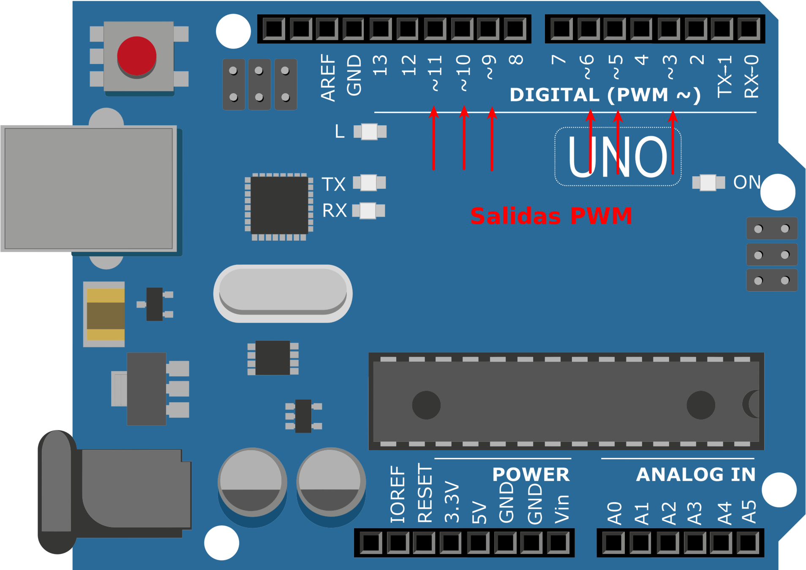

En arduino UNO tenemos una serie de pines digitales (3, 5, 6, 9, 10, y 11), que cuando se usan como salidas pueden tener modulación de ancho de pulso (PWM). La modulación de ancho de pulso, o PWM, sirve para obtener resultados analógicos con medios digitales. Las salidas digitales se utilizan para crear una onda cuadrada, una señal que se activa y desactiva con una frecuencia en el tiempo. En función del porcentaje de tiempo que está señal está a HIGH (5V) frente a LOW (0V) obtendremos una tensión en la salida entre 0 y 5 Voltios. Este porcentaje de tiempo se da pasando un valor comprendido entre 0 (0% por ciento del tiempo encendido) y 255 (100% del tiempo encendido). En el gráfico de la derecha se muestra un ejemplo, si damos la orden analogWrite (pin,0) estaría el 0% del tiempo a 5V y por tanto estaría siempre apagado, en el segundo caso dando la orden analogWrite (pin,64) estaría el 25% del tiempo a 5V y por tanto mostraría la salida un valor de tensión media baja (5V/4), con la orden analogWrite (pin,127) estaría el 50% del tiempo a 5V y por tanto mostraría la salida un valor de tensión media (5V/2), y así hasta la orden analogWrite (pin,255) que estaría el 100% del tiempo a 5V.
PWM, sirve para obtener resultados analógicos con medios digitales. Las salidas digitales se utilizan para crear una onda cuadrada, una señal que se activa y desactiva con una frecuencia en el tiempo. En función del porcentaje de tiempo que está señal está a HIGH (5V) frente a LOW (0V) obtendremos una tensión en la salida entre 0 y 5 Voltios. Este porcentaje de tiempo se da pasando un valor comprendido entre 0 (0% por ciento del tiempo encendido) y 255 (100% del tiempo encendido). En el gráfico de la derecha se muestra un ejemplo, si damos la orden analogWrite (pin,0) estaría el 0% del tiempo a 5V y por tanto estaría siempre apagado, en el segundo caso dando la orden analogWrite (pin,64) estaría el 25% del tiempo a 5V y por tanto mostraría la salida un valor de tensión media baja (5V/4), con la orden analogWrite (pin,127) estaría el 50% del tiempo a 5V y por tanto mostraría la salida un valor de tensión media (5V/2), y así hasta la orden analogWrite (pin,255) que estaría el 100% del tiempo a 5V.

En el shield TDR-Steam tenemos conectadas las siguientes salidas PWM:
| Sensor/Actuador/Módulo | Pin de conexión | |
| 3 | led RGB | D6-D9-D10 |
| 6 | Dos puertos (Entradas/Salidas) digitales | D3 y D5 |